Some useful working procedures
The following simple procedure is easily built upon the above:
>
egypt := proc(R)
local r, n, k;
r[0] := R:
n[1] := ceil(1/r[0]):
for k while type(1/r[k-1], integer) = false do
r[k] := r[k-1] - 1/n[k]:
n[k+1] := ceil(1/r[k]):
od:
seq(1/n[m], m=1..k);
end:
> egypt(1/7);
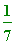
> egypt(3/15); # here '3/15' is already a unit fraction
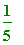
> egypt(3/5);
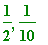
> egypt(17/39);
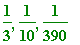
> egypt(171/3391); # the original example
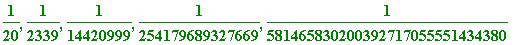
A dramatic example due to Stan Wagon is 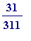 (which I'm not executing for printing):
> # egypt(31/311);
>
A way of checking (if you wish) is to make the output into a List, and then add the elements of that list:
>
L := [egypt(17/39)];
add(x, x = L);
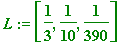
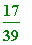
>
a := ithprime(100);
b := ithprime(200);
egypt(a/b);
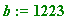
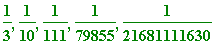
>
a := 9!+1:
b := 10!+1:
egypt(a/b);
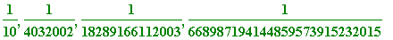
Here's a simple variation which will allow us to see the decreasing numerators (the last of which will always be '1', for we have arrived at a terminating unit fraction):
>
stages := proc(R)
local r, n, k, m;
r[0] := R:
n[1] := ceil(1/r[0]):
for k while type(1/r[k-1], integer) = false do
r[k] := r[k-1] - 1/n[k]:
n[k+1] := ceil(1/r[k]):
od:
print(seq(1/n[m], m=1..k));
lprint(`Decreasing numerators:`);
seq(numer(r[m]), m=0..k-1);
end:
>
> stages(4/17);
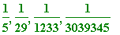
`Decreasing numerators:`
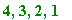
>
The '3, 2, 1' in the output are last three numerators on the RHS in:
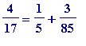
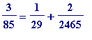
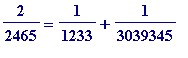
>
>
a := ithprime(100);
b := ithprime(200);
stages(a/b);

`Decreasing numerators:`
>
a := 9!+1:
b := 10!+1:
stages(a/b);
`Decreasing numerators:`

>
If we wanted only to see how many steps there were when the greedy algorithm was applied, we could do something like this:
>
howmany := proc(R) local r, n, k, m;
r[0] := R: n[1] := ceil(1/r[0]):
for k while type(1/r[k-1], integer) = false do
r[k] := r[k-1] - 1/n[k]:
n[k+1] := ceil(1/r[k]):
od: k; end:
>
> howmany(4/19);

> howmany(4/17); # the maximum number with numerator '4':
>